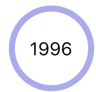

About me
I get excited about opportunities to be creative and to grow through challenge. Check out my Journey to UX below or download my resume.
Journey to UX
Born
Elementary School
I spent free time at school and home making multi-page magazines with markers for hours. Writing classes and after-school HTML elective were my favorites. >Interdisciplinary
In college, I enjoyed classes in psychology, communications, and computer science. I had a mission: Find the intersection.
Discovered Digital Design
I took a Digital Design Studio class and I loved engineering user flows, crafting infographics, building wire frames, and blogging about UX on Medium.
BSI
I declared my major: Bachelor of Science in Information. I got hooked to building data programs and enjoyed helping expand Consider Magazine’s brand in print and digitally as VP.
China
I studied in China with the Ross School of Business at Michigan and observed that the success of new Chinese firms like Alibaba and Tencent depends more on how well their products meet the needs of Chinese users.
Prudential
I interned as a UX Designer at Prudential Financial, where I worked on five ADA-compliant projects that are live and in production. I helped design the third-place Hack at Prudential’s HackCO and learned sthat I love challenging, fast-paced culture.
Teaching Assistant
I was an SI 506 (graduate-level Programming I) Instructional Aide, honing my technical skills.
Apple
I will be interning at Apple on the User Experience team in Summer 2018.